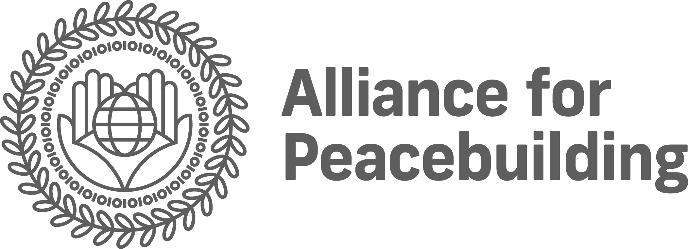
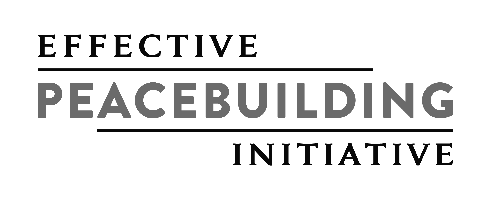

Build cutting-edge programs and strategies informed by the world’s largest corpus of peacebuilding data.



258,621Papers
42Structured, searchable datasets
10,664Field-tested M&E indicators, from EIRENE
65,059Extracted concepts
4,402Methodology types
Built for the sector, by the sector.
Including the EIRENE indicators from the Alliance for Peacebuilding, and soon the Dimensions of Peace dataset.
Built-in workflows apply expert-defined best practice to evaluating and writing reports, portfolio reviews and Rotary Global Grants.
Structured knowledge links findings across studies, so it can show how the evidence connects.
Every source is vetted and ranked for quality through a proprietary process.
Trained not to overstate a claim, and to say plainly when the evidence is strong, mixed or untested.
Evaluate proposals, appraise results, and refine your intervention strategy.
Map stakeholders, appraise portfolios, and target high-impact interventions with an evidence-based decision aid.
Choose indicators that fit, test the claims in grantee reports, and turn years of evaluations into institutional memory.
Design programs on what has worked in comparable contexts, and build monitoring plans you can defend.
Set country strategy, decide where scarce capacity goes, and brief funders with evidence-backed lessons.
Draft proposals, refine your theory of change, and develop evidence-based implementation plans.
Design operations that account for conflict, and flag do-no-harm risks before appraisal.
Compare investment options on evidence, feasibility and risk, and see where existing support leaves gaps.
Analyze the drivers of conflict in a region, judge which are addressable, and pressure-test a project’s assumptions.
Prepare a briefing with evidence-backed lessons, key caveats and sources before the meeting starts.
Set conflict-prevention priorities, weigh policy options against the evidence, and name what remains uncertain.
Read local conflict dynamics, find precedents from comparable places, and test what partners claim.
Work inside project folders and generate branded documents.
Explore the raw data in a built-in Python sandbox: NYU’s Peace Education and Research Program, Everyday Peace Indicators, DPD and CIC.
From implementing organizations to development banks, Peace Intel is structured and curated by experts to use the language and resources that matter to your field and your stakeholders.
10,664 field-tested M&E indicators, from the Alliance for Peacebuilding.
Nonprofit organizations can apply to receive a free license.
Advance the field by adding your organization’s data to Peace Intel.
Peace Intel is a production of the Effective Peacebuilding Initiative and the Alliance for Peacebuilding, with support from [supporters to confirm]. Founded by [founder to confirm].